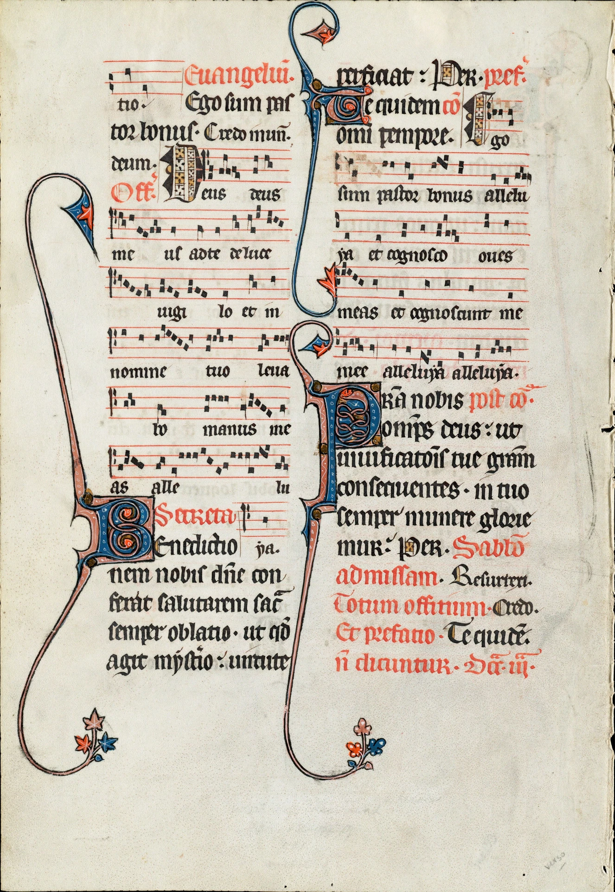
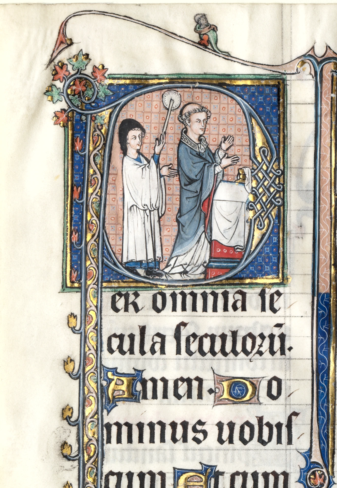
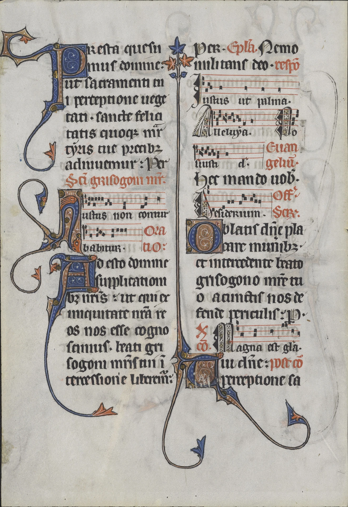
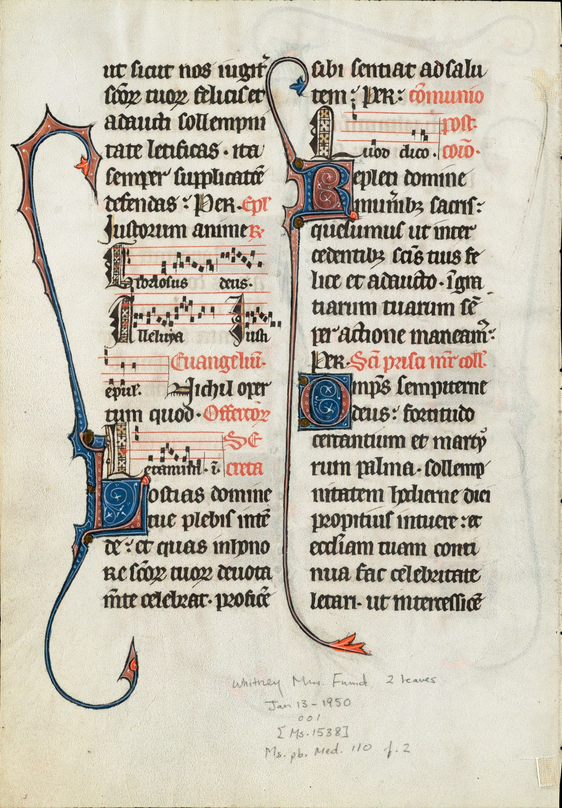
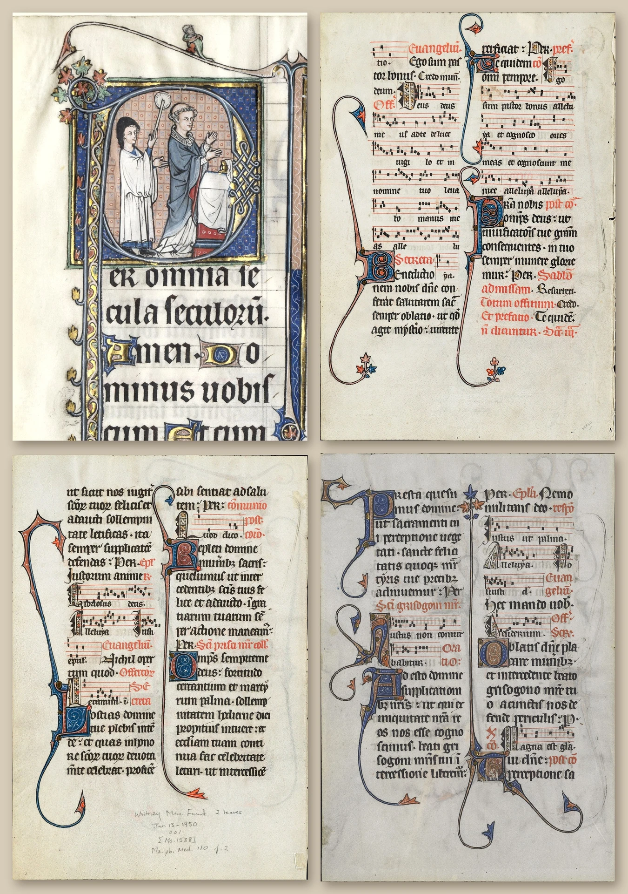

아직 펼치지 않은 카드흩어지고 사라질 뻔한 책 · 4오토 에게와 낱장들한 교수가 중세 필사본을 칼로 잘라 한 장씩 팔았어요. 그는 왜 그랬을까요?어떤 교수님이 옛날 책을 한 장씩 나눠 팔았대. 왜 그랬을까?
1942년 가을부터미국 뉴욕 → 보스턴 · 필라델피아 · 클리블랜드
오토 에게와 낱장들
13세기 끝 무렵 프랑스 보베 대성당에서 쓰던 손글씨 미사책은 1942년 가을 뉴욕에서 한 장씩 잘려 팔렸어요. 남은 장은 클리블랜드의 미술대학 교수 오토 에게의 손을 거쳐 북미 곳곳으로 흩어졌어요. 지금 클리블랜드·보스턴·필라델피아에 있는 진짜 낱장 네 장을 한자리에 모아 보세요.
옛날 성당에서 쓰던 두꺼운 책이 한 장씩 잘려서 여기저기 흩어졌대. 흩어진 종이를 다시 모아 볼까?
검수 전 시안이에요(기준서 1판). 낱장 사진 넷을 나란히 놓은 그림은 이 안내서가 만들었고, 놓은 자리는 책 속 차례가 아니에요. 장면에는 기록에 있는 것만 옮겼고, 상상은 ‘눈 감고 상상해 보기’에만 썼어요.
시안 확인용카드 단계 미리 보기
1
보베 대성당의 책
보베 미사경본은 13세기 끝 무렵 프랑스 보베에서 손으로 쓴 미사책이에요. 미사경본은 미사 때 사제가 읽고 노래하는 글을 한 권에 모은 책이에요. 온전할 때는 309장이었어요(디지털 스크립토리움).
지금은 없는 첫 장에는, 보베 대성당의 참사 위원 로베르 드 앙제스트가 이 책을 대성당에 주며 해마다 11월 3일에 자기를 위한 미사를 드려 달라고 한 글이 있었다고 해요. 참사 위원은 대성당의 일을 함께 맡은 성직자예요. 그 글은 1926년 경매 목록에 옮겨 적혀 전해져요(프라그멘타리움).

그림은 미사의 가장 중요한 기도(카논)로 들어가는 첫머리 글자 P예요. 그림을 감싼 둥근 틀이 P의 둥근 부분이고, 왼쪽 세로 막대가 P의 기둥이에요. 그래서 아래 글은 ‘er omnia…’로 이어져요. ‘영원히, 영원토록’이라는 뜻의 라틴어 ‘페르 옴니아 세쿨라 세쿨로룸’이 이 글자로 시작해요. 글자 안에서 사제가 제대(미사를 드리는 상) 앞에서 두 손을 들고, 뒤에서 한 사람이 돕고 있어요(클리블랜드 미술관).
옛날 성당에서 쓰던 미사책이야. 큰 글자 안에서 신부님이 두 손을 들고 계셔.
물어보기신부님 뒤에 서 있는 사람은 무엇을 들고 있을까?
2
1942년 가을, 뉴욕
18세기 끝 무렵 프랑스 혁명 때 대성당 도서관이 흩어지면서 이 책도 사라졌다가, 수십 년 뒤 다시 나타났어요. 1843년 프랑스 리옹의 앙리 오귀스트 브롤레만이 사들였고, 1926년 5월 런던 소더비 경매에서는 미국의 신문 사업가 윌리엄 랜돌프 허스트를 대신한 런던의 책방 주인 윌리엄 퍼메인이 970파운드에 샀어요(프라그멘타리움).
1942년 10월, 허스트는 이 책을 뉴욕의 백화점 김벨 브라더스를 통해 책방 주인 필립 더슈네스에게 1,000달러에 팔았어요. 한 달이 채 안 되어 더슈네스는 책을 잘라 한 장에 25~40달러에 팔기 시작했어요. 금박이 많은 장일수록 비쌌어요(프라그멘타리움).

이 낱장은 지금 필라델피아의 템플 대학교 도서관에 있어요. 도서관 기록에도 ‘1942년 필립 더슈네스가 해체했다’고 적혀 있어요. 1969년 콘웰 신학교에서 옮겨 왔고, 그 전에는 누구 손에 있었는지 기록이 없어요(템플 대학교 도서관).
1942년 가을, 책방 아저씨가 이 두꺼운 책을 한 장씩 잘라서 팔았어.
물어보기한 권을 한 장씩 나누면, 그 책은 어떻게 될까?
3
상자 속 15번
더슈네스는 팔고 남은 장들을 클리블랜드의 오토 에게 교수에게 넘겼어요(프라그멘타리움). 더슈네스는 그 뒤로도 낱장을 팔았어요. 오토 에게는 클리블랜드 미술대학에서 그래픽 디자인과 책의 역사를 가르쳤고, 나중에 학장이 되었어요. 1938년 3월에는 「나는 책 파괴자다」라는 글을 써서 이렇게 주장했어요(예일 뉴스).

“온전한 필사본 책을 가질 수 있는 사람은 정말 적다. 그러나 한 장이라면, 수백 명이 가질 수 있다.”
오토 에게, 「나는 책 파괴자다」(1938) · 예일 뉴스(2015)에 실린 영어 원문을 이 안내서가 우리말로 옮김
그는 필사본 50권에서 한 장씩 뽑아 상자에 담은 「중세 필사본 원본 낱장 50장」을 만들었어요. 보베 미사경본은 그 상자의 15번이에요. 그는 15번 설명에 ‘보베의 한 교회에 드린 특별한 선물로, 1285년 무렵 참사 위원 로베르 드 앙제스트를 위해 쓴 책’이라고 적었어요(에게의 상자 한 벌을 가진 스토니브룩 대학교 도서관 · 이 안내서가 옮김).
사진은 보스턴 공공도서관이 1950년 더슈네스에게서 산 두 장 가운데 둘째 장이에요(디지털 스크립토리움). 아래 여백에 도서관이 연필로 적은 번호가 남아 있어요.
교수님이 여러 책에서 한 장씩 모아 상자에 담았대. 이 책은 15번이었어.
물어보기상자를 열어 진짜 옛날 종이를 본 학생들은 어떤 기분이었을까?
4
다시 한자리에
오토 에게는 1951년에 세상을 떠났어요. 지금 학자들은 낱장이 있는 곳을 하나하나 찾아 사진을 모으고, 그 사진들을 이어 화면 위에 한 권을 다시 지어요(예일 뉴스 · 프라그멘타리움).
중세 필사본 학자 리사 파긴 데이비스는 보베 미사경본의 낱장을 찾아 모으고 있어요. 온라인 복원 사이트 ‘프라그멘타리움’에는 309장 가운데 122장이 모여 있어요(프라그멘타리움).
아래에서 클리블랜드·보스턴·필라델피아에 있는 진짜 낱장 네 장을 하나씩 눌러 한자리에 모아 보세요. 모으는 자리는 책 속 차례가 아니라, 이 안내서가 나란히 놓아 본 자리예요.
흩어진 낱장을 하나씩 눌러 한자리에 모아 보세요. 낱장마다 지금 어디에 있는지, 어떻게 그곳에 갔는지 알려 줘요.

세 도시에 흩어진 보베 미사경본 낱장 네 장 · 이 안내서가 사진을 나란히 놓았어요(놓은 자리는 책 속 차례가 아니고, 크기도 맞추지 않았어요) · 이 안내서가 나란히 놓은 낱장 사진 넷 · 클리블랜드 미술관 · 보스턴 공공도서관 · 템플 대학교 도서관 · 모두 퍼블릭 도메인 · 위키미디어 공용
낱장을 눌러 보세요. 그 장이 지금 있는 곳과 그곳에 온 길이 나와요.
네 장이 한자리에 모였어요. 앞면에서 본 보스턴의 낱장도 이 안에 있어요. 309장 가운데 아직 찾지 못한 장이 더 많아요.
보스턴과 필라델피아의 장은 모두 한 쪽을 두 단으로 나눠 단마다 21줄씩 쓰고, 붉은 네 줄 위에 줄기 없는 네모 음표를 그렸어요(디지털 스크립토리움 · 템플 대학교 도서관). 서로 다른 도시에 있어도, 한 권의 장이라는 표시예요.
여기저기 흩어진 종이를 하나씩 눌러서 다시 모아 보자!
물어보기네 장을 모아 보니, 무엇이 똑같아 보여?
눈 감고 상상해 보기
1942년 가을, 뉴욕의 한 책방. 묵직한 표지를 펼치자 오래된 양피지 냄새가 올라와요. 309장이 아직 한 권으로 묶여 있어요. 붉은 줄 위의 네모 음표, 금빛 머리글자, 장을 넘길 때마다 나는 사각거리는 소리. 그 소리는 곧 멈춰요.
눈을 감아 봐. 아주 두꺼운 책을 펼쳤어. 금빛 글자가 반짝, 네모 음표가 줄지어 있어. 사각사각 책장 넘기는 소리!
나의 자리
모두가 조금씩 나누어 갖는 것과 하나를 온전히 지키는 것, 나는 무엇이 더 소중하다고 느끼나요?
좋아하는 그림책을 친구들과 한 장씩 나누면 어떨까?
마음에 닿는 한 줄을 고르거나 직접 써 보세요. 한 줄을 남기면 이 자리의 도장이 찍혀요. 이 기기에만 저장돼요.
더 깊이
이야기를 보다 궁금해질 만한 것들이에요. 답을 읽거나 짧은 영화로 보세요.
이 책을 자른 사람은 교수예요, 책방 주인이에요?
에게는 왜 책을 잘랐을까요?
뒷이야기
아직 펼치지 않은 이야기예요. 누르면 이야기가 펼쳐지고 색이 돌아와요. 더 알고 싶으면 근거를 따라가 보세요.
다 펼치면, 다음에 오실 때 새 이야기가 찾아와요.
오늘의 뒷이야기는 여기까지예요. 다음에 오시면 새 이야기가 기다리고 있어요.
펼친 뒷이야기 · 누르면 다시 볼 수 있어요
더 찾아보기
기록마다 다른 점
누가 책을 잘랐을까 앞면은 에게가 뜯었다고 적었고, 보스턴 공공도서관의 기록도 1926년 퍼메인이 산 이 책을 뒤에 에게가 사들였다고 적어요. 템플 대학교 도서관과 프라그멘타리움(리사 파긴 데이비스)은 1942년 필립 더슈네스가 해체했고, 남은 장을 에게가 받아 나눴다고 적어요. 예일 대학교 바이네키 도서관 낱장(MS 748)에 붙인 데이비스의 설명은 더슈네스가 ‘동업자 에게와 함께’ 해체했다고 해요.
언제 대성당에 왔을까 디지털 스크립토리움의 보스턴 기록은 앙제스트가 13세기 끝 무렵 이 책을 대성당에 남겼다고 보고, 프라그멘타리움은 옛 문서를 들어 그가 세상을 떠난 1356년의 일로 적어요. 에게는 ‘1285년 무렵 앙제스트를 위해 쓴 책’이라고 적었어요.
상자 40개는 누가 꾸렸을까 스토니브룩 대학교 도서관은 에게가 상자 40개를 만들었다고 적어요. 프라그멘타리움은 그가 세상을 떠난 뒤 아내 루이즈가 보베 미사경본의 낱장을 15번으로 넣어 상자 40개쯤을 꾸려 내놓았다고 적어요.
몇 장이 모였을까 프라그멘타리움에는 309장 가운데 122장이 모여 있어요(2026년 11월 18일 확인). 새로 찾은 장이 더해지고 있어요.
집에서 보기
확인한 날 · 2026년 11월 18일 · 바뀌기 쉬운 정보라 정기적으로 다시 확인해요
프라그멘타리움에서는 지금까지 모인 보베 미사경본의 낱장들을 한 권처럼 넘겨 볼 수 있어요. 클리블랜드 미술관 누리집에서는 이 카드에 실은 낱장을 크게 볼 수 있어요. 아래쪽 머리글자(교회와 회당)도 함께 나와요.
네 장을 한자리에 금박
흩어진 낱장 네 장을 모두 한자리에 모으면 카드에 금박이 입혀져요.
흩어진 낱장 네 장을 모두 모으기
아이와 함께 채색
아이와 함께 ‘영화처럼 보기’를 끝까지 보면 카드가 채색돼요.
아이와 함께 ‘영화처럼 보기’를 끝까지 보기
근거 보기 (19)
- 로욜라 메리마운트 대학교 디지털 컬렉션: Doves Bible, 1903-1905 — 에게가 모아 엮은 『이름난 성경들의 낱장: 1121~1935년의 아홉 세기』 속 한 장, 에게의 설명(흔히 이제껏 가장 훌륭한 정식 책 활자)
- Wikipedia: Beauvais Missal — 길잡이(1356년 9월 죽음을 느끼고 해마다의 기념 미사를 바라며 줌, 프랑스의 탈그리스도교화 때 흩어짐, 낱장을 나눠 판 것은 이익을 늘리려고, 2023년 12월 122장, 2022년 75달러, 오슬로 · 와세다)
- Wikipedia: Chantry — 길잡이(해마다 세상을 떠난 날에 드리는 미사, 잘못을 씻고 영혼이 평화를 얻도록 돕는다는 믿음)
- 클리블랜드 미술관(1982.141) — 두 머리글자가 카논 앞 머리말을 꾸밈, P 안의 사제와 돕는 사람, 여백의 작은 생물, 28.5 × 20cm, ‘오토 에게를 기리며’
- Lisa Fagin Davis, 학자 메일링 리스트 dm-l(2015년 3월 24일) — 디지털 복원을 시작함, 알려진 낱장 80여 장
- Wikipedia: William Randolph Hearst · Gimbels · Neume · Marginalia — 뒷이야기마다 적음
- Fragmentarium: Beauvais Missal(F-whyw, 리사 파긴 데이비스의 설명) — 13세기 끝 무렵 보베, 첫 장의 글(앙제스트, 11월 3일 미사, 1926년 소더비 목록에 적힘)과 1356년, 18세기 끝 도서관이 흩어질 때 사라짐, 1843년 브롤레만, 1926년 5월 4일 소더비 970파운드(퍼메인이 허스트를 대신해), 1942년 10월 김벨 브라더스를 통해 더슈네스에게 1,000달러, 한 달이 채 안 되어 한 장 25~40달러(금박에 따라), 남은 장을 에게에게, 1951년 뒤 루이즈가 15번으로 상자 40개쯤
- Fragmentarium: Beauvais Missal – Virtual Reconstruction(F-4ihz) — 309장 가운데 122장, 2019년부터
- Fragmentarium: Boston Public Library MS pb Med. 110 1(F-ca15) — 부활절 뒤 주일의 미사, 1942년 더슈네스가 해체, 에게의 15번
- Digital Scriptorium: Boston Public Library MS pb Med. 110(DS3367) — 두 장, 두 단 21줄, 붉은 네 줄 위 줄기 없는 네모 음표, 검은 먹과 붉은 글씨, 앙제스트의 유증, 1926년 소더비, 1950년 더슈네스에게서 삼, 온전한 책 309장·금빛 큰 머리글자 35개·그림 머리글자 4개(미사 셋, 교회와 회당 하나)
- Temple University Libraries, SCRC 368: Beauvais Missal Leaf — 1942년 더슈네스가 해체, 에게의 15번, 두 단 21줄, 1969년 콘웰 신학교에서 옮겨 옴, 그 전은 모름
- Cleveland Museum of Art 1982.141: Leaf from a Missal with Two Historiated Initials — 머리글자 P(미사를 드리는 사제)·V(교회와 회당), 미사 감사송 첫머리, 1300년 무렵, ‘오토 에게를 기리며’ 프로이덴하임 부부 기증
- Stony Brook University Libraries: Missal: Missale Bellovacense(에게의 15번 설명) — ‘보베의 한 교회에 드린 특별한 선물, 1285년 무렵 참사 위원 로베르 드 앙제스트를 위해 씀’
- Stony Brook University Libraries: Otto F. Ege — Fifty Original Leaves from Medieval Manuscripts(1888~1951, 상자 40개, 19번 세트, 흩어진 책을 화면에서 다시 짓기)
- Yale News(2015): Beinecke Library acquires treasure trove of medieval manuscripts from famed ‘book breaker’ — 1888년생, 클리블랜드 미술대학 교수·학장, 1938년 3월 「I am a Biblioclast」와 그 문장, 2만 5천여 장 가운데 10%, 흩어진 낱장을 화면에서 다시 짓기
- Smarthistory: Synagoga and Ecclesia, Strasbourg Cathedral — 교회와 회당을 나타낸 두 여인, 눈을 가린 회당과 그 뜻
- Echoes: Yale University, Beinecke MS 748(리사 파긴 데이비스의 설명) — 더슈네스가 동업자 에게와 함께 1942년 해체, 309장 가운데 122장을 찾음
- Wikipedia: Beauvais Missal — 길잡이
- 위키미디어 공용: 보스턴 공공도서관 두 장(DPLA) · 템플 대학교 낱장(DPLA) · 클리블랜드 미술관 1982.141
그림·사진·소리 출처
- 사진: 클리블랜드 미술관(1982.141) · 퍼블릭 도메인 · 위키미디어 공용
- 사진: 템플 대학교 도서관 특별 소장품 연구 센터(SCRC 368) · 퍼블릭 도메인 · 미국 디지털 공공도서관(DPLA) · 위키미디어 공용
- 사진: 보스턴 공공도서관(MS pb Med. 110) · 퍼블릭 도메인 · 미국 디지털 공공도서관(DPLA) · 위키미디어 공용
- 이 안내서가 나란히 놓은 낱장 사진 넷 · 클리블랜드 미술관 · 보스턴 공공도서관 · 템플 대학교 도서관 · 모두 퍼블릭 도메인 · 위키미디어 공용
- 사진: 보스턴 공공도서관(MS pb Med. 110) · 퍼블릭 도메인 · 미국 디지털 공공도서관(DPLA) · 위키미디어 공용
- 사진: 클리블랜드 미술관(1982.141) · 퍼블릭 도메인 · 위키미디어 공용
- 사진: 보스턴 공공도서관(MS pb Med. 110) · 퍼블릭 도메인 · 미국 디지털 공공도서관(DPLA) · 위키미디어 공용
‘처음 만나는 기독교 문화’의 깊은 카드예요. 카드 단계와 남긴 글은 이 기기에만 저장돼요.